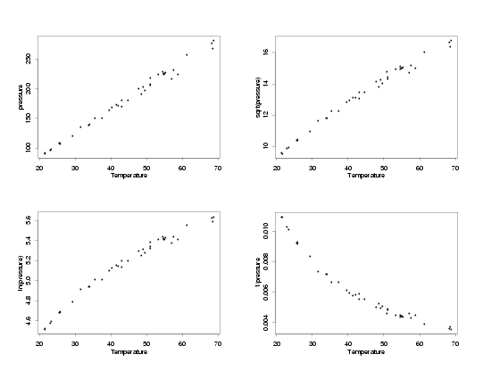
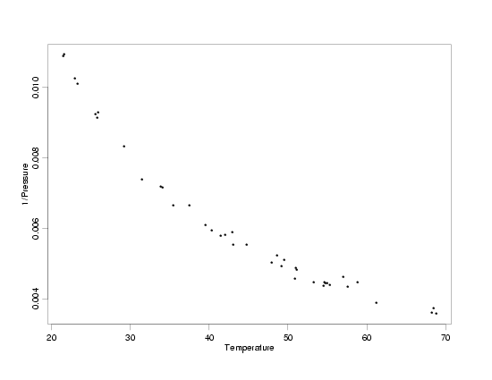
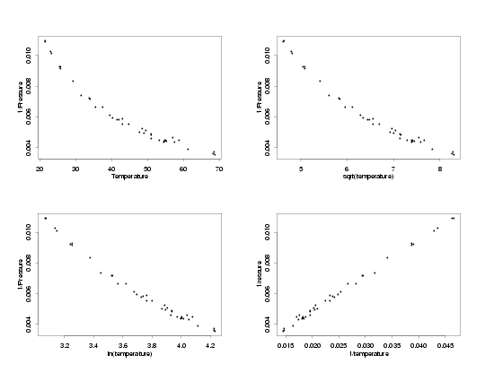
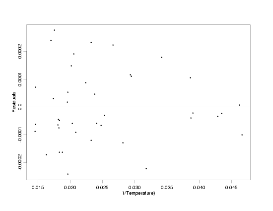
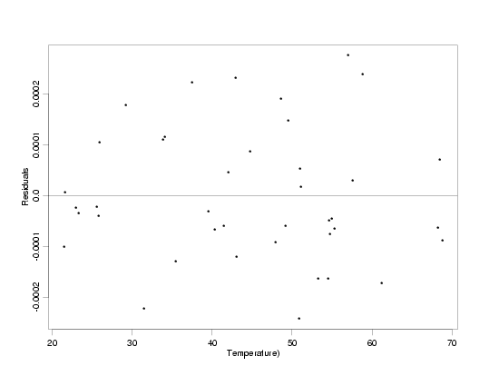
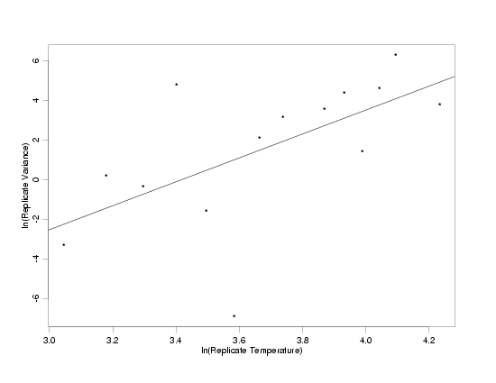
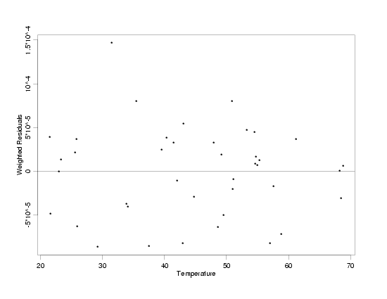
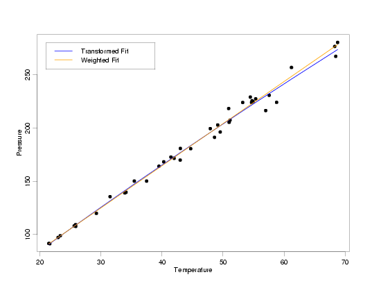

4.
Process Modeling
4.4.
Data Analysis for Process Modeling
4.4.5.
If my current model does not fit the data well, how can I improve it?
4.4.5.2.
|
Accounting for Non-Constant Variation Across the Data
|
|
|
Two Basic Approaches: Transformation and Weighting
|
There are two basic approaches to obtaining improved parameter estimators for data in which the
standard deviation of the error is not constant across all combinations of predictor variable
values:
- transforming the data so it meets the standard assumptions, and
- using weights in the parameter estimation to account for the unequal
standard deviations.
Both methods work well in a wide range of situations. The choice of which to use often hinges on
personal preference because in many engineering and industrial applications the two methods
often provide practically the same results. In fact, in most experiments
there is usually not enough data to determine which of the two models works better. Sometimes,
however, when there is scientific information about the nature of the model,
one method or the other may be preferred because it is more consistent with an existing theory.
In other cases, the data may make one of the methods more convenient to use than the other.
|
|
Using Transformations
|
The basic steps for using transformations to handle data with unequal subpopulation standard
deviations are:
- Transform the response variable to equalize the variation across the levels of the predictor
variables.
- Transform the predictor variables, if necessary, to attain or restore a simple functional
form for the regression function.
- Fit and validate the model in the transformed variables.
- Transform the predicted values back into the original units using the inverse of the
transformation applied to the response variable.
|
|
Typical Transformations for Stabilization of Variation
|
Appropriate transformations to stabilize the variability may be suggested by scientific knowledge
or selected using the data. Three transformations that are often effective for equalizing the
standard deviations across the values of the predictor variables are:
- \(\sqrt{y}\),
- \(\ln{(y)}\)
(note: the base of the logarithm does not really matter), and
- \(\frac{1}{y}\).
Other transformations can be considered, of course, but in a surprisingly wide range of problems
one of these three transformations will work well. As a result, these are good
transformations to start with, before moving on to more specialized transformations.
|
|
Modified Pressure / Temperature Example
|
To illustrate how to use transformations to stabilize the variation in the data, we will return
to the modified version of the Pressure/Temperature example. The
residuals from a straight-line fit to that data clearly showed that the standard deviation of the
measurements was not constant across the range of temperatures.
|
|
Residuals from Modified Pressure Data
|

|
|
Stabilizing the Variation
|
The first step in the process is to compare different transformations of the response variable,
pressure, to see which one, if any, stabilizes the variation across the range of temperatures.
The straight-line relationship will not hold for all of the transformations, but at this stage
of the process that is not a concern. The functional relationship can usually be corrected after
stabilizing the variation. The key for this step is to find a transformation that makes the
uncertainty in the data approximately the same at the lowest and highest temperatures (and in
between). The plot below shows the modified Pressure/Temperature data in its original units, and
with the response variable transformed using each of the three typical transformations. Remember
you can click on the plot to see a larger view for easier comparison.
|
|
Transformations of the Pressure
|

|
|
Inverse Pressure Has Constant Variation
|
After comparing the effects of the different transformations, it looks like using the inverse of
the pressure will make the standard deviation approximately constant across all temperatures.
However, it is somewhat difficult to tell how the standard deviations really compare on a plot
of this size and scale. To better see the variation, a full-sized plot of temperature versus the
inverse of the pressure is shown below. In that plot it is easier to compare the variation across
temperatures. For example, comparing the variation in the pressure values at a temperature of
about 25 with the variation in the pressure values at temperatures near 45 and 70, this plot
shows about the same level of variation at all three temperatures. It will still be critical to
look at residual plots after fitting the model to the transformed variables, however, to really
see whether or not the transformation we've chosen is effective. The residual scale is really the
only scale that can reveal that level of detail.
|
|
Enlarged View of Temperature Versus 1/Pressure
|

|
|
Transforming Temperature to Linearity
|
Having found a transformation that appears to stabilize the standard deviations of the measurements, the next step in the
process is to find a transformation of the temperature that will restore the straight-line relationship, or some other
simple relationship, between the temperature and pressure. The same three basic transformations that can often be used
to stabilize the variation are also usually able to transform the predictor to restore the original relationship between
the variables. Plots of the temperature and the three transformations of the temperature versus the inverse of the pressure
are shown below.
|
|
Transformations of the Temperature
|

|
|
|
Comparing the plots of the various transformations of the temperature versus the inverse of the
pressure, it appears that the straight-line relationship between the variables is restored when
the inverse of the temperature is used. This makes intuitive sense because if the temperature
and pressure are related by a straight line, then the same transformation applied to both
variables should change them both similarly, retaining their original relationship. Now, after
fitting a
straight line to the transformed data, the residuals
plotted versus both the transformed and original values of temperature indicate that the
straight-line model fits the data and that the random variation no longer increases with
increasing temperature. Additional diagnostic plots of the
residuals confirm that the model fits the data well.
|
|
Residuals From the Fit to the Transformed Data
|

|
|
|

|
|
Using Weighted Least Squares
|
As discussed in the overview of different methods for building
process models, the goal when using weighted least squares regression is to ensure that each
data point has an appropriate level of influence on the final parameter estimates. Using the
weighted least squares fitting criterion, the parameter estimates are
obtained by minimizing
$$ Q = \sum_{i=1}^{n} \ w_i \left[ y_i - f(\vec{x}_i;\hat{\vec{\beta}}) \right]^2 \, . $$
Optimal results, which minimize the uncertainty in the parameter estimators, are obtained when
the weights, \(w_i\),
used to estimate the values of the unknown
parameters are inversely proportional to the variances at each
combination of predictor variable values:
$$ w_i \propto \frac{1}{\sigma^2_i} \, .$$
Unfortunately, however, these optimal weights, which are based on the true variances
of each data point, are never known. Estimated weights have to be used instead. When estimated
weights are used, the optimality properties associated with known weights no longer strictly
apply. However, if the weights can be estimated with high enough precision, their use can
significantly improve the parameter estimates compared to the results that would be obtained if
all of the data points were equally weighted.
|
|
Direct Estimation of Weights
|
If there are replicates in the data, the most obvious way to estimate the weights is to set the
weight for each data point equal to the reciprocal of the sample variance obtained from the set
of replicate measurements to which the data point belongs.
Mathematically, this would be
$$ w_{ij} = \frac{1}{\hat{\sigma}^2_i} =
\left[\frac{\sum_{j=1}^{n_i}(y_{ij}-\bar{y}_i)^2}{n_i-1}\right]^{-1} $$
where
- \(w_{ij}\)
are the weights indexed by their predictor variable
levels and replicate measurements,
- \(i\)
indexes the unique combinations of predictor variable values,
- \(j\)
indexes the replicates within each combination of predictor variable values,
- \(\hat{\sigma_i}\)
is the sample standard deviation of the response
variable at the ith combination of predictor variable values,
- \(n_i\)
is the number of replicate observations at the ith
combination of predictor variable values,
- \(y_{ij}\)
are the individual data points indexed by their
predictor variable levels and replicate measurements,
- \(\bar{y}_i\)
is the mean of the responses at the ith combination of predictor variable levels.
|
|
|
Unfortunately, although this method is attractive, it rarely works well. This is because when the
weights are estimated this way, they are usually extremely variable. As a result, the estimated
weights do not correctly control how much each data point should influence the parameter
estimates. This method can work, but it requires a very large number of replicates at each
combination of predictor variables. In fact, if this method is used with too few replicate
measurements, the parameter estimates can actually be more variable than they would have been if
the unequal variation were ignored.
|
|
A Better Strategy for Estimating the Weights
|
A better strategy for estimating the weights is to find a function that relates the standard
deviation of the response at each combination of predictor variable values to the predictor
variables themselves. This means that if
$$ \hat{\sigma}_i^2 \approx g(\vec{x}_i;\vec{\gamma}) $$
(denoting the unknown parameters in the function \(g\)
by \(\vec{\gamma}\)),
then the weights can be set to
$$ w_{ij} = \frac{1}{g(\vec{x}_i;\hat{\vec{\gamma}})} \, . $$
This approach to estimating the weights usually provides more precise estimates than direct
estimation because fewer quantities have to be estimated and there is more data to estimate
each one.
|
|
Estimating Weights Without Replicates
|
If there are only very few or no replicate measurements for each combination of predictor
variable values, then approximate replicate groups can be formed so that weights can be
estimated. There are several possible approaches to forming the replicate groups.
- One method is to manually form the groups based on plots of the response against the
predictor variables. Although this allows a lot of flexibility to account for the features of
a specific data set, it often impractical. However, this approach may be useful for relatively
small data sets in which the spacing of the predictor variable values is very uneven.
- Another approach is to divide the data into equal-sized groups of observations after
sorting by the values of the response variable. It is important when using this approach not
to make the size of the replicate groups too large. If the groups are too large, the standard
deviations of the response in each group will be inflated because the approximate replicates
will differ from each other too much because of the deterministic variation in the data. Again,
plots of the response variable versus the predictor variables can be used as a check to confirm
that the approximate sets of replicate measurements look reasonable.
- A third approach is to choose the replicate groups based on ranges of predictor variable
values. That is, instead of picking groups of a fixed size, the ranges of the predictor variables
are divided into equal size increments or bins and the responses in each bin are treated as
replicates. Because the sizes of the groups may vary, there is a tradeoff in this case between
defining the intervals for approximate replicates to be too narrow or too wide. As always, plots
of the response variable against the predictor variables can serve as a guide.
Although the exact estimates of the weights will be somewhat dependent on the approach used to
define the replicate groups, the resulting weighted fit is typically not particularly sensitive
to small changes in the definition of the weights when the weights are based on a simple, smooth
function.
|
|
Power Function Model for the Weights
|
One particular function that often works well for modeling the variances is a power of the
mean at each combination of predictor variable values,
$$ \begin{array}{ccl}
\hat{\sigma}_i^2 & \approx & \gamma_1\mu_i^{\gamma_2} \\
& & \\
& = & \gamma_1f(\vec{x}_i;\vec{\beta})^{\gamma_2} \, .
\end{array} $$
Iterative procedures for simultaneously fitting a weighted least squares model to
the original data and a power function model for the weights are discussed in
Carroll and Ruppert (1988), and
Ryan (1997).
|
|
Fitting the Model for Estimation of the Weights
|
When fitting the model for the estimation of the weights,
$$ \hat{\sigma}_i^2 = g(\vec{x}_i;\vec{\gamma}) + g(\vec{x}_i;\vec{\gamma})\varepsilon \, ,$$
it is important to note that the usual regression assumptions
do not hold. In particular, the variation of the random errors is not constant across the
different sets of replicates and their distribution is not normal. However, this can be often
be accounted for by using transformations (the ln transformation often stabilizes the
variation), as described above.
|
|
Validating the Model for Estimation of the Weights
|
Of course, it is always a good idea to check the assumptions of the
analysis, as in any model-building effort, to make sure the model of the weights seems to fit
the weight data reasonably well. The fit of the weights model often does not need to meet all
of the usual standards to be effective, however.
|
|
Using Weighted Residuals to Validate WLS Models
|
Once the weights have been estimated and the model has been fit to the original data using
weighted least squares, the validation of the model follows as usual, with one exception. In a
weighted analysis, the distribution of the residuals can vary substantially with the different
values of the predictor variables. This necessitates the use of weighted residuals
[Graybill and Iyer (1994)]
when carrying out a graphical residual analysis so that the plots can be interpreted as usual.
The weighted residuals are given by the formula
$$ e_{ij} = \sqrt{w_{ij}} \, \left[y_{ij} - f(\vec{x}_i;\hat{\vec{\beta}})\right] \, .$$
It is important to note that most statistical software packages do not compute and return
weighted residuals when a weighted fit is done, so the residuals will usually have to be weighted
manually in an additional step. If after computing a weighted least squares fit using carefully
estimated weights, the residual plots still show the same funnel-shaped pattern as they did for
the initial equally-weighted fit, it is likely that you may have forgotten to compute or plot the
weighted residuals.
|
|
Example of WLS Using the Power Function Model
|
The power function model for the weights, mentioned above, is often
especially convenient when there is only one predictor variable. In this situation the general
model given above can usually be simplified to the power function
$$ \hat{\sigma}_i^2 \approx \gamma_1x_i^{\gamma_2} \, ,$$
which does not require the use of iterative fitting methods.
This model will be used with the modified version of the
Pressure/Temperature data, plotted below, to illustrate the steps needed to carry out
a weighted least squares fit.
|
|
Modified Pressure/Temperature Data
|

|
|
Defining Sets of Approximate Replicate Measurements
|
From the data, plotted above, it is clear that there are not many true replicates in this data
set. As a result, sets of approximate replicate measurements need to be defined in order to use
the power function model to estimate the weights. In this case, this was done by rounding a
multiple of the temperature to the nearest degree and then converting the rounded data back to
the original scale.
$$ \mbox{Temperature}_{\mbox{rep}} = 3 \cdot \mbox{round}(\mbox{Temperature}/3) $$
This is an easy way to identify sets of measurements that have temperatures that are relatively
close together. If this process had produced too few sets of replicates, a smaller factor than
three could have been used to spread the data out further before rounding. If fewer replicate
sets were needed, then a larger factor could have been used. The appropriate value to use is a
matter of judgment. An ideal value is one that doesn't combine values that are too
different and that yields sets of replicates that aren't too different in size. A table showing
the original data, the rounded temperatures that define the approximate replicates, and the
replicate standard deviations is listed below.
|
|
Data with Approximate Replicates
|
Rounded Standard
Temperature Temperature Pressure Deviation
---------------------------------------------
21.602 21 91.423 0.192333
21.448 21 91.695 0.192333
23.323 24 98.883 1.102380
22.971 24 97.324 1.102380
25.854 27 107.620 0.852080
25.609 27 108.112 0.852080
25.838 27 109.279 0.852080
29.242 30 119.933 11.046422
31.489 30 135.555 11.046422
34.101 33 139.684 0.454670
33.901 33 139.041 0.454670
37.481 36 150.165 0.031820
35.451 36 150.210 0.031820
39.506 39 164.155 2.884289
40.285 39 168.234 2.884289
43.004 42 180.802 4.845772
41.449 42 172.646 4.845772
42.989 42 169.884 4.845772
41.976 42 171.617 4.845772
44.692 45 180.564 NA
48.599 48 191.243 5.985219
47.901 48 199.386 5.985219
49.127 48 202.913 5.985219
49.542 51 196.225 9.074554
51.144 51 207.458 9.074554
50.995 51 205.375 9.074554
50.917 51 218.322 9.074554
54.749 54 225.607 2.040637
53.226 54 223.994 2.040637
54.467 54 229.040 2.040637
55.350 54 227.416 2.040637
54.673 54 223.958 2.040637
54.936 54 224.790 2.040637
57.549 57 230.715 10.098899
56.982 57 216.433 10.098899
58.775 60 224.124 23.120270
61.204 60 256.821 23.120270
68.297 69 276.594 6.721043
68.476 69 267.296 6.721043
68.774 69 280.352 6.721043
|
|
Transformation of the Weight Data
|
With the replicate groups defined, a plot of the ln of the replicate variances versus the ln of the temperature shows
the transformed data for estimating the weights does appear to follow the power function model. This is because the
ln-ln transformation linearizes the power function, as well as stabilizing the variation of the random errors and
making their distribution approximately normal.
$$ \begin{array}{ccl}
\ln{(\hat{\sigma}_i^2)} & = & \ln{(\gamma_1x_i^{\gamma_2})} \\
& & \\
& = & \ln{(\gamma_1)} + \gamma_2\ln{(x_i})
\end{array} $$
|
|
Transformed Data for Weight Estimation with Fitted Model
|

|
|
Specification of Weight Function
|
The Splus output from the fit of the weight estimation model is shown below. Based on the output
and the associated
residual plots,
the model of the weights seems reasonable, and
$$ \begin{array}{ccl}
w_{ij} & = & \mbox{Temperature}^{-\hat{\gamma}_2} \\
& & \\
& \approx & \mbox{Temperature}^{-6} \\
\end{array} $$
should be an appropriate weight function for the modified Pressure/Temperature data.
The weight function is based only on the slope from the fit to the transformed weight data
because the weights only need to be proportional to the replicate variances. As a result, we can
ignore the estimate of \(\gamma_1\)
in the power function since it is only a
proportionality constant (in original units of the model). The exponent on the temperature in
the weight function is usually rounded to the nearest digit or single decimal place for
convenience, since that small change in the weight function will not affect the results of the
final fit significantly.
|
|
Output from Weight Estimation Fit
|
Residual Standard Error = 3.0245
Multiple R-Square = 0.3642
N = 14,
F-statistic = 6.8744 on 1 and 12 df, p-value = 0.0223
coef std.err t.stat p.value
Intercept -20.5896 8.4994 -2.4225 0.0322
ln(Temperature) 6.0230 2.2972 2.6219 0.0223
|
|
Fit of the WLS Model to the Pressure / Temperature Data
|
With the weight function estimated, the fit of the model with weighted least squares produces
the residual plot below. This plot, which shows the weighted residuals from the fit versus
temperature, indicates that use of the estimated weight function has stabilized the increasing
variation in pressure observed with increasing temperature. The
plot of the data with the estimated regression function
and
additional residual plots using the weighted residuals confirm
that the model fits the data well.
|
|
Weighted Residuals from WLS Fit of Pressure / Temperature Data
|

|
|
Comparison of Transformed and Weighted Results
|
Having modeled the data using both transformed variables and weighted least squares to account
for the non-constant standard deviations observed in pressure, it is interesting to compare the
two resulting models. Logically, at least one of these two models cannot be correct (actually,
probably neither one is exactly correct). With the
random error inherent in the data, however, there is no way to tell which of the two models
actually describes the relationship between pressure and temperature better. The fact that the
two models lie right on top of one another over almost the entire range of the data tells us
that. Even at the highest temperatures, where the models diverge slightly, both models match
the small amount of data that is available reasonably well. The only way to differentiate between
these models is to use additional scientific knowledge or collect a lot more data. The good
news, though, is that the models should work equally well for predictions or calibrations based
on these data, or for basic understanding of the relationship between temperature and pressure.
|
|
|

|


{kind=link}
{kind=link}
{kind=link}
{kind=link}
{kind=link}
{kind=link}
{kind=link}
{kind=link}